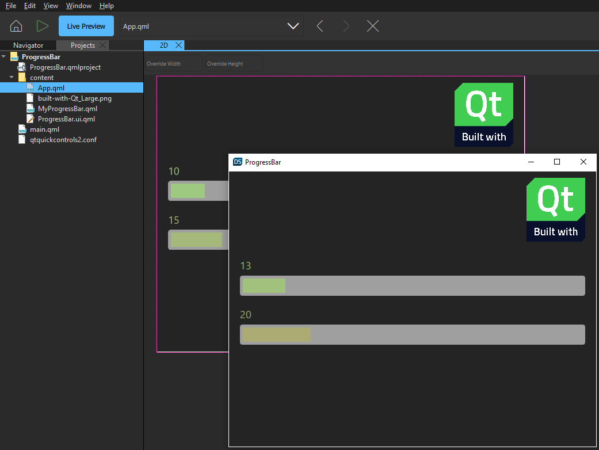

Validating with Target Hardware
You can use the live preview feature to preview a UI file or the entire UI on the desktop, as well as on embedded Linux devices. The changes you make to the UI are instantly visible to you in the preview. While the preview is available on Android devices, it does not instantly reflect the changes made to the UI in the editor. It shows the snapshot of your project from the moment you start the preview on the device.
In addition, you can use Qt Design Viewer to run applications in most widely-used web browsers on the desktop and in mobile devices This enables you to easily share your designs with reviewers who don't have Qt Design Studio.

- Previewing on Desktop
You can preview individual QML files or the whole UI.
- Previewing on Devices
When you install Qt Design Studio, everything you need for previewing on devices is set up automatically. You only need to connect your devices to your system.
- Previewing Android applications
You can preview Android applications live using an Android emulator.
- Sharing Applications Online
You can share applications online and view them in a web browser.